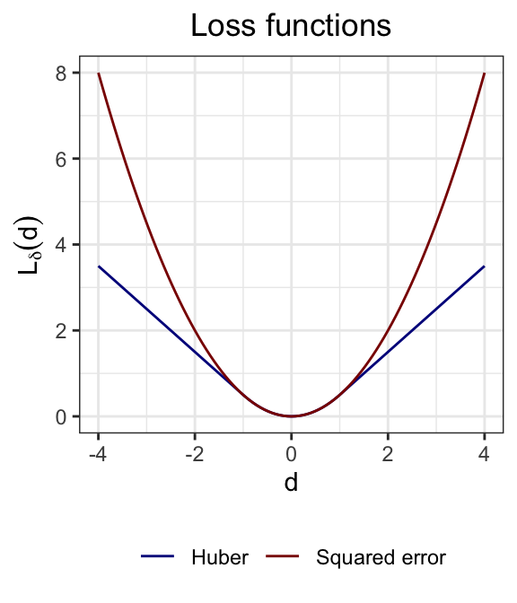

17 Robust estimation and inference
17.1 Drawback of squared error loss
Suppose that \[ y_i = \boldsymbol{x}_{i*}^T \boldsymbol{\beta} + \epsilon_i, \quad \epsilon_i \overset{\text{i.i.d.}}\sim G, \quad i = 1, \ldots, n, \quad \tag{17.1}\] for some distribution \(G\). If the distribution \(G\) has heavy tails, then the residuals will contain outliers. Recall that the least squares estimate is defined as \[ \boldsymbol{\widehat \beta} \equiv \underset{\boldsymbol{\beta}}{\arg \min}\ \sum_{i = 1}^n L(y_i - \boldsymbol{x}_{i*}^T \boldsymbol{\beta}), \quad \text{where} \quad L(d) \equiv \frac{1}{2}d^2. \] The squared error loss \(L(d)\) is sensitive to outliers in the sense that a large value of \(d_i \equiv y_i - \boldsymbol{x}_{i*}^T \boldsymbol{\beta}\) can have a significant impact on the loss function \(L(d_i)\). The least squares estimate, as the minimizer of this loss function, is therefore sensitive to outliers.
17.2 The Huber loss
One way of addressing this challenge is to replace the squared error loss with a different loss that does not grow so quickly in \(y_i - \boldsymbol{x}_{i*}^T \boldsymbol{\beta}\). A popular choice for such a loss function is the Huber loss:
\[ L_\delta(d) = \begin{cases} \frac{1}{2}d^2, \quad &\text{if } |d| \leq \delta; \\ \delta(|d|-\tfrac12\delta), \quad &\text{if } |d| > \delta. \end{cases} \]
This function is differentiable at the origin, like the squared error loss, but grows linearly as opposed to quadratically.
17.3 Scale estimation
The choice of \(\delta > 0\) depends on the scale of the noise terms \(\epsilon_i\). Supposing that \(\text{Var}[\epsilon_i] = \sigma^2\), a large residual is one where \(|\epsilon_i/\sigma|\) is large. In this sense, \(\delta\) should be on the same scale as \(\sigma\). Of course, \(\sigma\) is unknown, so a first step towards obtaining a robust estimate is to estimate \(\sigma\). While we would usually estimate \(\sigma\) based on the residuals from the least squares estimate, this approach is not robust to outliers. Instead, we can obtain a pilot estimate of the coefficients using the least absolute deviation (LAD) estimator, a scale-free and outlier-robust estimate: \[ \boldsymbol{\widehat{\beta}}^{\text{LAD}} \equiv \underset{\boldsymbol{\beta}}{\arg \min}\ \sum_{i = 1}^n |y_i - \boldsymbol{x}_{i*}^T \boldsymbol{\beta}|. \] Then, we can estimate \(\sigma\) from the residuals based on the LAD estimate. Since some of these residuals are outliers, it is better to avoid simply taking a sample variance. Instead, we can use the median absolute deviation (MAD) of the residuals, which is a robust estimate of the scale of the noise terms. \[ \widehat{\sigma} \equiv \frac{1}{0.675}\text{median}\left\{ |y_i - \boldsymbol{x}_{i*}^T \boldsymbol{\widehat{\beta}}^{\text{LAD}}| \right\}. \] The purpose of the scaling factor of \(0.675\) is to connect the MAD to the standard deviation of the distribution of \(\epsilon_i\); it is derived based on the normal distribution.
Note
In principle, \(\widehat{\boldsymbol \beta}^{\text{LAD}}\) could be used not just for estimation of \(\sigma\) but also for inference for \(\boldsymbol \beta\) itself. However, the LAD estimator may be less efficient than the Huber estimator, so the latter estimator is usually preferred.
17.4 Huber estimation
With an estimate of \(\sigma\) in hand, we can use the Huber loss function to estimate \(\boldsymbol{\beta}\): \[ \boldsymbol{\widehat{\beta}}^{\text{Huber}} \equiv \underset{\boldsymbol{\beta}}{\arg \min}\ \sum_{i = 1}^n L_\delta\left(\frac{y_i - \boldsymbol{x}_{i*}^T \boldsymbol{\beta}}{\widehat \sigma}\right). \]
A common choice for \(\delta\) is \(\delta = 1.345\), which makes the Huber estimator 95% efficient relative to the least squares estimator under normality. The resulting \(\boldsymbol{\widehat{\beta}}^{\text{Huber}}\) is an M-estimator. We can compute this estimator by taking a derivative of the objective and setting it to zero: \[ \sum_{i = 1}^n L'_\delta\left(\frac{y_i - \boldsymbol{x}_{i*}^T \boldsymbol{\beta}}{\widehat \sigma}\right) \boldsymbol{x}_{i*} = 0. \] Unlike least squares, this equation does not have a closed-form solution. However, it can be solved using an iterative algorithm. Under certain assumptions, the resulting estimator can be shown to be consistent.
17.5 Inference based on Huber estimates
We can construct hypothesis tests and confidence intervals using \(\boldsymbol{\widehat{\beta}}^{\text{Huber}}\) based on the following result.
Theorem 17.1 (Asymptotic normality of Huber estimator (informal)) Suppose the data \((\boldsymbol X, \boldsymbol y)\) follow the model (17.1), with fixed design matrix \(\boldsymbol X\). Then, if \(\hat \sigma\) is a consistent estimator of \(\sigma\) and if the noise distribution \(G\) is symmetric, then
\[ \boldsymbol{\widehat{\beta}}^{\text{Huber}} \overset \cdot \sim N(\boldsymbol{\beta}, v (\boldsymbol X^T \boldsymbol X)^{-1}), \quad \text{where} \quad v \equiv \sigma^2 \frac{\mathbb E[L'_\delta(\epsilon_i/\sigma)^2]}{\mathbb E[L''_\delta(\epsilon_i/\sigma)]^2}. \] Letting \(\hat \epsilon_i \equiv y_i - \boldsymbol{x}_{i*}^T \boldsymbol{\widehat{\beta}}^{\text{Huber}}\), we can estimate \(v\) via \[ \widehat v \equiv \hat \sigma^2 \frac{\frac{1}{n} \sum_{i = 1}^n L'_\delta(\hat \epsilon_i/\hat \sigma)^2}{\left(\frac{1}{n} \sum_{i = 1}^n L''_\delta(\hat \epsilon_i/\hat \sigma)\right)^2}. \] Under appropriate regularity conditions, \(\widehat v\) is a consistent estimator of \(v\), so that \[ \boldsymbol{\widehat{\beta}}^{\text{Huber}} \overset \cdot \sim N(\boldsymbol{\beta}, \hat v (\boldsymbol X^T \boldsymbol X)^{-1}). \]